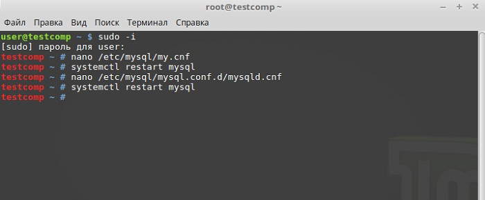

2.Технология установки и настройка сервера MySQL в операционных системах Linux
Установка MySQL с помощью терминала
Запускаем терминал Linux. Например, щелкаем по ссылке на панели или запускаем из меню Mint.
Устанавливать MySQL необходимо от имени суперпользователя root, поэтому давайте сразу переключимся на этого пользователя. Для этого пишем sudo -i (или sudo su) и жмем Enter (ввод), затем вводим пароль пользователя.
Далее сначала давайте обновим список пакетов, для этого пишем команду.
apt-get update
Затем для установки: MySQL Server, MySQL Client и MySQL Workbench пишем следующую команду.
apt-get -y install mysql-server mysql-client mysql-workbench
В процессе установки нам предложат придумать и ввести пароль для администратора сервера MySQL (пользователя root), мы вводим пароль и в следующем окне подтверждаем его.

Установка будет завершена, как распакуются и настроятся все пакеты.
Настройка MySQL
После установки первое, что нам необходимо сделать, это осуществить базовую настройку сервера MySQL. Даже если он у Вас будет только локально на домашнем компьютере.
Базовая настройка безопасности MySQL
По умолчанию MySQL устанавливается с некоторыми небезопасными параметрами, поэтому нам необходимо сделать наш сервер чуть более безопасным. Для этого выполним специальный скрипт под названием mysql_secure_installation в терминале Linux. Скрипт выполнять нужно также от имени root или с использованием команды sudo.
В процессе Вам будут задавать вопросы, практически на все отвечаем «Да», т.е. пишем «Y». Исключение может составлять вопрос о смене пароля пользователя root (Change the password for root?), т.е. его можно не менять и ответить «N», если в процессе установки MySQL мы задали хороший пароль для root. Сразу после запуска скрипта вводим пароль администратора сервера MySQL (как раз тот самый пароль от пользователя root).
mysql_secure_installation
Потом будет вопрос о том, хотим ли мы активировать плагин проверки сложности пароля, отвечаем «Y», т.е. «Да».
В случае если мы активируем данный плагин, у нас спросят уровень сложности пароля, давайте ответим 2, т.е. средней сложности (цифры, большие/маленькие буквы и спец. символы).
Далее будет вопрос как раз о смене пароля пользователя root, как я уже сказал, я отвечаю «N», т.е. «Нет». Если на этапе установки MySQL Вы придумали для root простой пароль, то в этом случае лучше конечно его сменить.
Затем мы отвечаем «Y», для того чтобы удалить анонимных пользователей. Также отвечаем «Y», для того чтобы запретить пользователю root удаленное подключение.
Потом снова отвечаем «Y», для удаления тестовой базы данных и на последний вопрос также отвечаем «Y» для перезагрузки таблицы привилегий.
На этом базовая настройка безопасности завершена.
Настройка кодировки в MySQL
По умолчанию в MySQL установлена кодировка latin1, для того чтобы мы могли вносить, хранить и читать данные на кириллице, давайте изменим эту кодировку на utf8, в данном случае все созданные нами объекты на сервере по умолчанию будут иметь кодировку utf8. Также мы укажем настройки, при которых все подключения к серверу принудительно будут иметь также кодировку utf8. Для этого давайте откорректируем конфигурационный файл /etc/mysql/my.cnf. Это мы будем делать в терминале, поэтому открываем его и вводим следующую команду (также от имени root или с использованием команды sudo).
nano /etc/mysql/my.cnf
После того как Вы откроете этот файл, опуститесь чуть ниже и укажите следующие параметры.
[mysqld]
character-set-server=utf8
collation-server=utf8_general_ci
init_connect='SET collation_connection = utf8_general_ci'
init_connect='SET NAMES utf8'
skip-character-set-client-handshake
[client]
default-character-set=utf8
[mysqldump]
default-character-set=utf8
Сохраняем файл сочетанием клавиш Ctrl+O и жмем Enter, затем закрываем его также сочетанием клавиш только Ctrl+X.
После внесения изменений в конфигурационный файл, сервер MySQL необходимо перезагрузить, например вот так.
systemctl restart mysql
Настройка удаленного доступа к серверу MySQL
Если вдруг Вам понадобилось, чтобы к Вашему серверу можно было подключаться с других компьютеров, то для этого необходимо изменить одну настройку в файле mysqld.cnf, а именно параметр bind-address, по умолчанию в нем указано что подключаться к серверу можно только с локального компьютера. Для того чтобы разрешить подключение с любых компьютеров укажите bind-address=0.0.0.0. Запускаем также с правами суперпользователя.
nano /etc/mysql/mysql.conf.d/mysqld.cnf
После внесения изменений также сохраняем/закрываем (Ctrl+O, Ctrl+X) файл и перезагружаем сервер MySQL.
systemctl restart mysql
